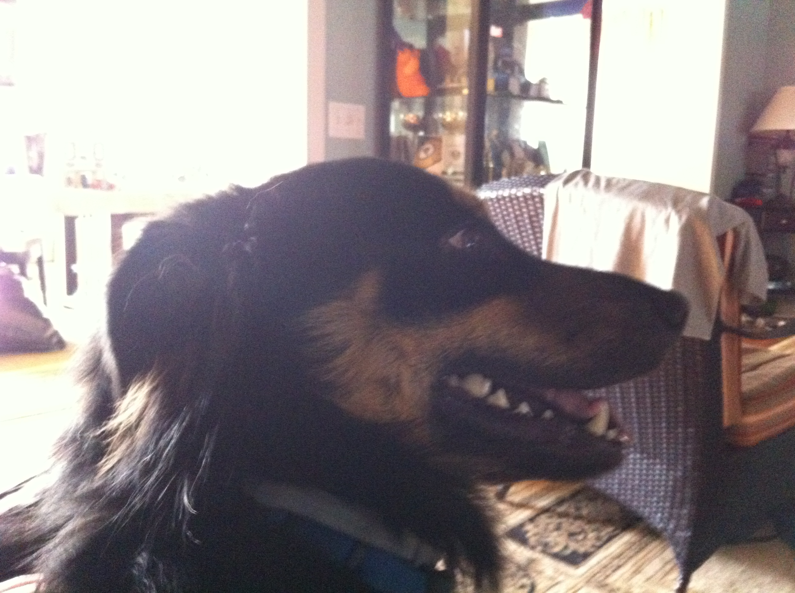
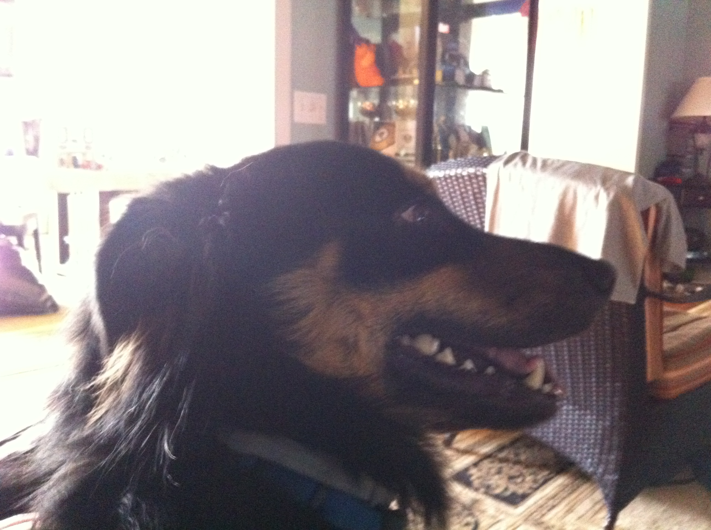

Sage

Sage is a 3 year old Golden Retriever. She is one of the laziest dogs. She loves sneaking into the bedroom and hopping onto the neatest bed. She also loves riding in a car with the windows open feeling the wind and air. She enjoys walking, only if you take her for a ride to a big arboretum or park. Walking around the neighborhood is not necessarily her cup of tea.
Her favorite food is corn. One day, she stole corn on the cob from the dining table, which was surprising because she is normally gentle and polite. She took the stolen corn to the patio and enjoyed her meal by herself. Unfortunately, the corn turned out to be unripe, so she ended up vomiting it all later.
Photo Gallery


Likes
- Carrots
- Nap
- Big Park
Juno

No one knows exactly what breed Juno is, but that makes him all the more special. He was adopted before he was one year old; despite this and his German shepherd-esque looks, he stayed close to the same size, hovering around 50 lbs into adulthood. At the weathered age of ten years old, Juno is dealing with hip problems, but manages to stay in good spirits.
One of Juno‘s favorite pastimes is finding the dirtiest puddle within a one-mile radius and making sure every inch of him makes contact with said puddle. If rolling around in dirt was an Olympic sport, Juno would have been the one that facilitated its inclusion into the Olympics.
Photo Gallery


 

Likes
- Human food
- Head pats
- Sleeping
Rocket

Rocket (also named huihui) is a 6-month pomeranian puppy with big eyes and a small, black cute nose. Rocket is named rocket because he runs so fast and energetic all day without even having some rest. Rocket loves to carry his little toy walking around the house and jumping towards my bed.
Rocket is friendly to all human beings. He will be a little shy at first, but will ‘say hi’ to you after a few seconds. He is also friendly to dogs, especially the small breed, because the large size dogs are hard for him to smell lol. If you meet rocket, don‘t hesitate to say hi to him!! He will be super happy the whole day.
Photo Gallery


Likes
- Chewing bones
- Chasing
- Running
Chako

With a coat as dark as midnight but eyes as bright as stars, he seemed to embody both the mystery and the exuberance of life itself. Agile and playful, he danced around the park as if the grass were his personal stage, captivating everyone with his vivacity.
Yet, when at home, Chako transformed into a zen master. He would curl up on his favorite rug, eyes half-closed in contemplation, as if solving the great puzzles of the universe. Both spirited and serene, Mochi was a living testament to the richness of dualities, teaching his human companions that one could be many things all at once.
Photo Gallery


Likes
- Sleep
- Play
- Eat
Sprout

Sprout, a shy and elusive kitten when he first arrived at four months old, gradually became an affectionate companion. He enjoyed sleeping on my bed, but his early morning wake-up calls at 6:30 AM were a daily routine.
During my challenging academic phase, Sprout became my constant companion during late-night drawing sessions, quietly curling up on my lap, providing comfort and banishing solitude.
Photo Gallery


Likes
- Egg
- Playing with Naer and my tennis string
- Sleeping in the sunshine